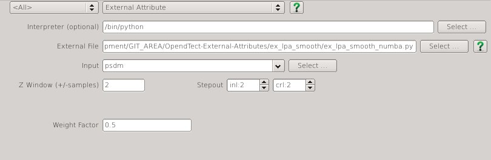

Local Polynomial Approximation Smoothing
Script: ex_lpa_smooth.py
Description
This External Attribute script can be used to apply structure preserving smoothing. A region of data around each sample location is fitted by a second order 3D polynomial using gaussian weighted least squares.
The approximation has the following form:
\[ r_0 + r_1 * x + r_2 * y + r_3 * z + r_4 * x^2 + r_5 * y^2 + r_6 * z^2 + r_7 * x*y + r_8 * x*z + r_9 * y*z \]
where x (inline), y (crossline) and z (time/depth) are relative to the analysis location, ie the analysis location has x=y=z=0.
This attribute calculates and outputs only the r0 term of the local polynomial approximation. This provides a smoother version of the input with relatively minor smearing of steep dips and fault cuts. Increasing either the Weight Factor or size of the analysis volume (StepOut or Z window) increases the amount of smoothing.
Examples


Input Parameters
All attributes have the same set of input parameters. The only difference is that some have a choice of output attribute.

| NAME | DESCRIPTION |
|---|---|
| Z window (+/-samples) | Specifies the extent of the analysis cube in the Z direction. Number of Z samples in cube will be 2*Z_window+1.{: style="width:60%"} |
| Stepout | Specifies the inline and crossline extent of the analysis cube. Number of samples in each direction will be 2*Stepout+1. |
| Weight Factor | Determines the extent of the gaussian weight function used in the weighted least squares approximation. The standard deviation of the gaussian weight function (sigma) is related to this value by sigma = min(2*Stepout, 2*Z_Window) * Weight_Factor. A value of 0.15 gives near zero weight for points at the smallest extent of the analysis cube. |